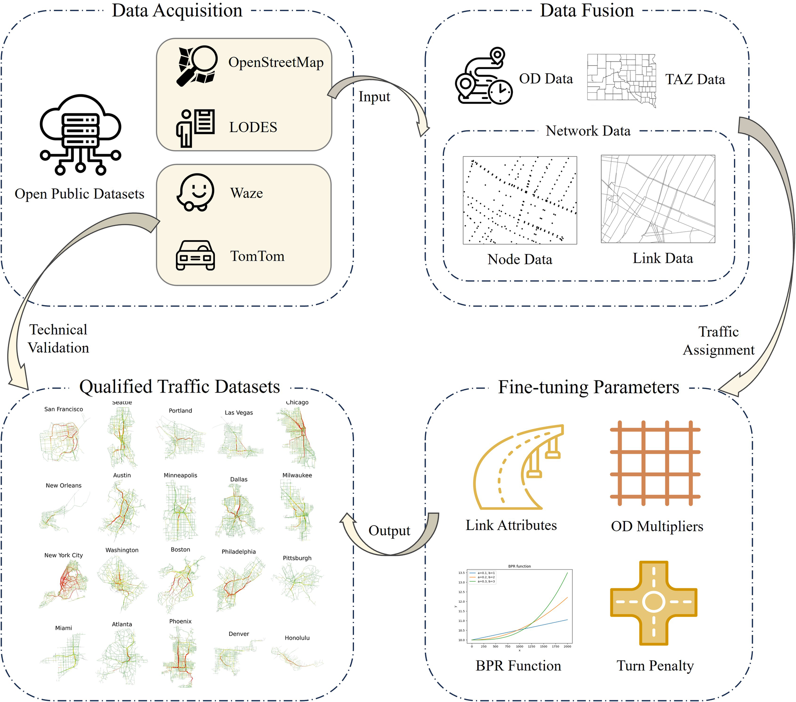

Mixing data, optimization and decision
The role of automatic differentiation
LVMT
2025-06-13
A little about me
üìú CV
- 2019-2022: PhD at CERMICS
- 2022: visiting student at MIT
- 2023-2024: postdoc at EPFL
- 2025-????: researcher here!
üíï Passions
- By day: applied mathematics, computer science
- By night: board games, songwriting, musicals
Motivation
Road traffic
MATSim model of Paris (https://matsim.org/gallery/paris/)
Train routing
Flatland railway simulator

Mohanty et al. (2020)
Challenges
üìä Calibration
Fitting model parameters to explain observed data.
üèÉ Acceleration
Replacing complicated models with simpler surrogates.
üó∫Ô∏è Decision-making
Using these models to inform industrial or political choices.
We focus on simpler models
They are easier to analyze and optimize.
Path problems with congestion
Shortest paths
Most transportation problems live on a graph \(G = (V, E)\):
- \(V\) is a set of vertices
- \(E\) is a set of (weighted) edges
Shortest path = sequence of edges \(a \to b\) with minimum cost.
| Single agent | Interacting agents |
|---|---|
| Easy | Hard |
Static traffic assignment (theory)
What if conflicting agents cause a slowdown?
\[ t_e(f_e) = t_e^0 \left[1 + \alpha \left(\frac{f_e}{c_e}\right)^\beta \right] \enspace \text{with} \enspace \begin{cases} \text{$t_e$: travel time} \\ \text{$f_e$: edge flow} \\ \text{$c_e$: capacity}\end{cases}\]
Everyone behaves selfishly: find a Nash equilibrium.
Static traffic assignment (example)
Xu et al. (2024)
Static traffic assignment (calibration)
- Model parameters: free flow times, street capacities
- Input data: network structure, travel demand
- Observed data: measured flows or speeds
Goal: estimate model parameters from the data.
Idea
During calibration, the TA problem is a subroutine.
Static traffic assignment (calibration)

Can we do better than manual fine-tuning?
Grid search does not scale.
Multi-agent pathfinding (theory)
What if conflicting agents are forbidden?
Everyone behaves selflessly: find a social optimum.
Multi-agent pathfinding (example)

Multi-agent pathfinding (acceleration)
MAPF is difficult, choice between optimality and speed?
\[ \xrightarrow[]{\text{Input}} \boxed{\text{Encoder}} \xrightarrow[]{\text{Guidance}} \boxed{\text{Fast solver}} \xrightarrow[]{\text{Solution}} \]
Goal: learn encoder parameters to guide the solver.
- modified movement costs
- custom priority ordering
Idea
During encoder learning, the MAPF problem is a subroutine.
Both models (decision-making)
üö• Static traffic assignment
Change the rules:
- Set tolls
- Close streets
üó∫Ô∏è Multi-agent pathfinding
Change the rules:
- Cancel trips
- Adapt infrastructure
Idea
When we evaluate policy changes, the original problem is a subroutine.
Machine learning primer
Supervised learning
Imagine we have a dataset of image-label pairs \((x_i, y_i)\):
\[ (üê±, \texttt{cat}) \quad (üê∂, \texttt{dog}) \quad (ü¶Ü, \texttt{duck}) \]
We want to recognize animals using a function
\[ f_p : x \longmapsto y \]
This function has parameters \(p\) which need to be set.
Losses and gradients
Parameters are set by minimizing a loss function
\[ \ell(p) = \sum_i \lvert f_p(x_i) - y_i \rvert^2 \]

The gradient \(\nabla \ell(p)\) gives a direction where loss increases.
Taking small steps with \(p\) in the opposite direction = gradient descent.
Deep learning
Neural networks are a flexible family of parametric functions.
Subroutines called layers can be assembled arbitrarily.
Gradient descent works because individual layers are differentiable automatically.
The meaning of differentiation
Derivatives allow fast sensitivity analysis:
- ➡️ for a given input, how much does it affect every output?
- ⬅️ for a given output, how much is it affected by every input?
No need to evaluate small changes in every possible direction
Optimization as a layer
The gist
A strange concept
What if we could compute derivatives of transportation problems automatically?
- Calibration: fit a large model with gradient descent
- Acceleration: learn an encoder to improve fast solvers
- Decision-making: solve bi-level optimization problems
Machine learning ü§ù constraint satisfaction
Parametric optimization problems
A parametric optimization problem has the form
\[ p \quad \longmapsto \quad \min_v c(v, p) \enspace \text{subject to} \enspace v \in \mathcal{C} \]
\(v\) is the decision variable, \(c\) the cost, \(v \in \mathcal{C}\) the constraints.
| TA | MAPF | |
|---|---|---|
| Variable \(v\) | Traffic flows | Agent paths |
| Parameter \(p\) | Street capacities | Movement costs |
Theoretical issues
| TA | MAPF | |
|---|---|---|
| Problem type | Continuous | Discrete |
| Derivative \(\frac{\partial v^*}{\partial p}\) | Well-defined | Ill-defined |
Practical issues
üë©‚Äçüî¨ Expertise
Can we reuse existing algorithms and make them differentiable?
üíª Hardware
Can we leverage modern parallel processors (GPUs) to speed things up?
üìñ Open science
Can we do it all with open-source software and reproducible experiments?
Conclusion
Recent works
- Solving large-scale transportation problems for logistics: Bouvier et al. (2023)
- Unifying techniques for differentiable optimization layers: Dalle et al. (2022)
- Developing software for automatic differentiation of complex programs: Dalle and Hill (2025), Hill and Dalle (2025), Montoison, Dalle, and Gebremedhin (2025)
Research perspectives
- Methodological: combinatorial optimization, graph machine learning, automatic differentiation, game theory
- Practical: large-scale transportation & logistics problems
- Industrial partners: Renault, Michelin, Califrais, ART, SNCF
I want to know what you do!
Send me a paper you like at guillaume.dalle@enpc.fr